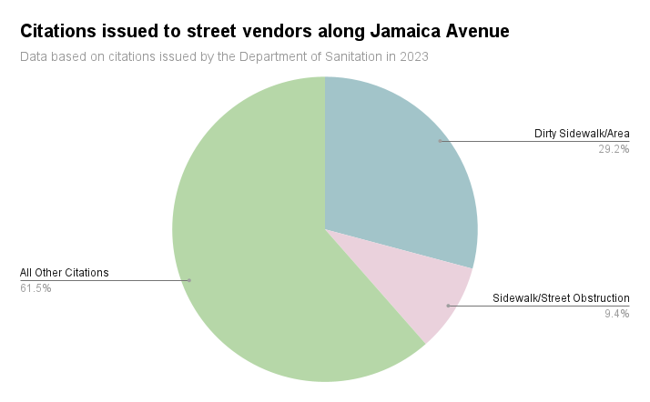

Street Vendors May Receive More Resources and Support
City council finally revising street vending policies in NYC
by Anastasia Tomkin
Friday Dec 8
Street vendors are a common sight in many urban areas of New York City. Laws about street selling are intended to preserve quality of life in the community. Vendors, who are often immigrants or people of color, are regularly fined for any infractions.
Of all the citations issued to street sellers along Jamaica Avenue in 2023, roughly a third were for “dirty sidewalks” or “dirty areas.”
“With street vendors, as any other business, you will see people who have good practices and others who have bad practices,” said Mohamed Attia, managing director of the Street Vendor Project. “But if there is a system in place to educate the vendors on managing their waste, we will see a lot of progress to that end.”
New York City council members convened on December 6th to revise the city’s street vending rules and mitigate the criminalization of street vending.